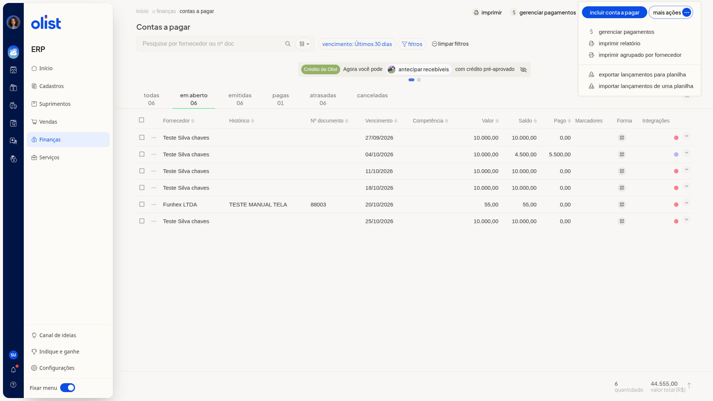

Como imprimir o relatório de contas a pagar
Descrição
No ERP da Olist, a tela Contas a pagar lista os lançamentos e permite imprimir o relatório. Você também pode imprimir agrupado por fornecedor.
Essas opções ficam em Finanças > Contas a pagar, no menu Mais ações.
Pré-requisitos
Você precisa ter acesso à tela Contas a pagar no ERP.
Instruções
-
Acesse Finanças > Contas a pagar.

-
Clique em Mais ações.

-
Clique em Imprimir relatório ou em Imprimir agrupado por fornecedor.
Links relacionados
Se precisar de ajuda para imprimir o relatório, fale com o suporte.